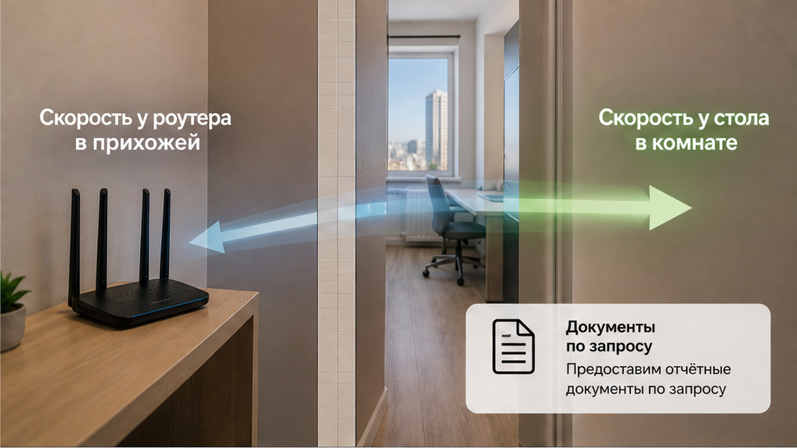
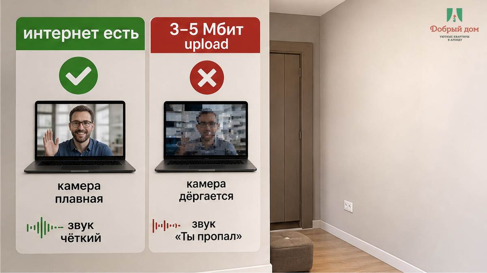
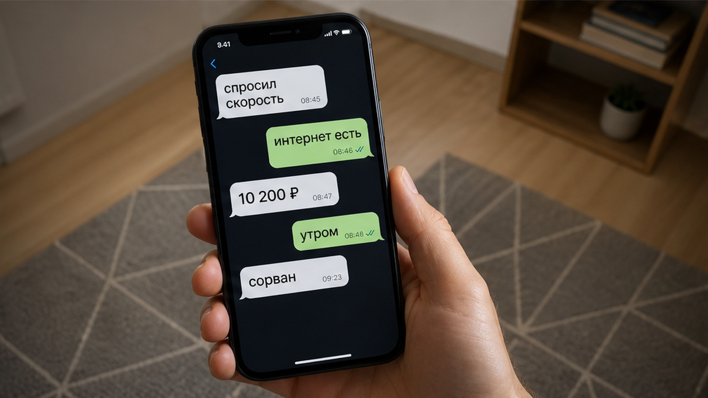
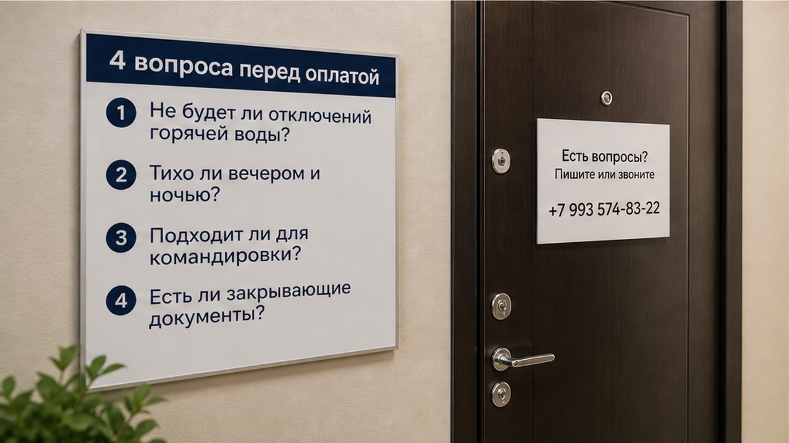

«Wi‑Fi есть, рабочее место есть» — так вся проверка перед переводом и закончилась. Три ночи, 10 200 ₽, поздний рейс, утром созвон с руководителем и подрядчиком. Вы заходите в квартиру, видите стол у окна, значок сети на телефоне, ставите сумку и думаете: ну хоть тут без сюрпризов. Утром камера идёт кадрами, звук отстаёт, в чате встречи три раза пишут: «Ты пропал». У стола на загрузку три—пять Мбит. Интернет в квартире есть. Нормального видеосозвона — нет.
Гость пересел ближе к роутеру, поставил ноутбук на колени, выключил видео и дотянул встречу голосом. Потом нашёл вторую часть ловушки: розетка в комнате была у изголовья кровати. Стол у окна красивый, но без питания. Ноутбук держится три часа, впереди рабочий день, удлинителя нет. В чат ушло сообщение про скорость и розетку. В ответ прилетело знакомое: «Ну у нас же интернет есть».
Я хост посуточной в Тюмени. Это «Добрый дом». Пишем и отвечаем в Telegram · MAX — и такие истории читаем регулярно. Командировочный гость приезжает не просто переночевать. Ему утром надо быть в кадре, отвечать людям, показывать экран, не искать розетку на полу между кроватью и тумбочкой.


«Интернет есть» для хозяина часто означает ровно одно: роутер включён, пароль работает, раньше никто не ругался. Для гостя эта же фраза звучит иначе: меня будет видно и слышно на встрече. Между этими двумя значениями и лежат оплаченные три ночи.
Видео не требует лекции про сервисы и тарифы. Оно требует, чтобы сигнал держался именно там, где вы сидите. Не у роутера в прихожей, не на скорости из договора, не на скриншоте, который сделали год назад. У стола. На загрузку. Потому что фильм можно подождать, а ваш голос и камера должны уйти к собеседникам сейчас.
Три—пять Мбит на отдачу — не пустота. Это хуже: пограничная цифра. Пока вы просто говорите, всё будто терпимо. Начинаете показывать экран, включается камера у нескольких участников, сосед смотрит что-то вечером через тот же роутер — и картинка рассыпается. Формально сеть есть. По делу вы сидите на встрече с выключенной камерой и объясняете начальнику, что это не вы пропали, это квартира такая.
Стены тоже не читают объявление. Сеть может быть хорошей рядом с роутером и слабой в дальней комнате. Одна частота добивает дальше, другая бывает быстрее, но хуже проходит через стены. Гостю не нужно разбираться в этом ночью после рейса. Ему нужен честный ответ: где замеряли, какая загрузка у стола, есть ли там питание.

Обычно она выглядит почти безобидно. Гость пишет: «Подскажите, интернет стабильный? У меня утром видеосозвон». Хозяин отвечает: «Да, Wi‑Fi есть, все довольны». Гость уточняет: «А скорость какая?» В ответ: «Обычная, всё работает». После этого переводятся деньги. А утром появляется сообщение: «Камера рассыпается, на отдачу три мегабита». И тот самый ответ: «Ну у нас же интернет есть».
Не обязательно здесь кто-то специально обманывает. Просто один говорит про наличие подключения, второй — про рабочую возможность. Но расплачивается за разницу тот, кто уже приехал с ноутбуком и оплаченной квартирой. Так же работает расплывчатое «всё включено»: сначала звучит спокойно, а потом внезапно оказывается, что за дорогу надо доплачивать. Мы разбирали такую историю, где слова хозяина закончились доплатой 2 400 ₽ за такси.
Для рабочего заезда ответ должен быть предметным. Какая сеть ловит у стола. Какая там скорость загрузки по замеру. Где розетка. Есть ли удлинитель. Если человек не знает — можно честно написать: «Сейчас проверю». Это нормальный ответ. Три минуты ожидания перед оплатой лучше, чем утро, в которое уже нечего исправить.
Сколько Мбит на загрузку у стола — и есть ли розетка рядом, не под кроватью?
Вот вопрос, который открывает квартиру лучше любого красивого фото. Ответили цифрой и объяснили, где мерили, — человек понимает, зачем вы спрашиваете. Ответили «не переживайте, всё работает» — информации не дали. Дальше решение за вами: рисковать ли созвоном, который нельзя перенести.
Розетка кажется мелочью, пока вы не оказываетесь на месте. Стол есть, а стула нет. Стул есть, а провод не дотягивается. Розетка есть, но под кроватью, занята ночником или спрятана так, что ноутбук превращает комнату в полосу препятствий. Фото при этом не врёт: стол действительно был. Просто рабочим местом он не стал.
А у вас что важнее перед командировкой: скорость, документы или ночной заезд? Напишите в Telegram или MAX. Там можно спросить по своей ситуации, без игры в угадайку по одной фотографии.
В этом кейсе гость прилетел поздно. В такой момент особенно хочется просто открыть дверь, поставить телефон на зарядку и лечь. Поэтому «встречу лично» или «связь есть» надо расшифровывать до оплаты. Кто даст инструкцию после полуночи? Кто на связи, если код не подходит? Что делать, если вы приехали, а вопрос с интернетом всплыл только утром?
Ночное заселение не должно держаться на надежде, что кто-то не уснёт. Про это отдельно писали в материале про бесконтактное заселение посуточно в Тюмени. Смысл тот же: то, что произойдёт с вами после полуночи, проговаривается, пока деньги ещё у вас.
И рядом всегда лежит вопрос документов. В переписке могут написать: закрывающие — «по запросу». Гость читает это как «дадут». Потом бухгалтерия спрашивает, какие именно документы, кто их выставит и когда они придут. А вы уже собираете вещи, завтра рейс, и время уходит не на отдых, а на попытку вытянуть из чата ясный ответ.
Не надо устраивать допрос. Достаточно до перевода спросить состав документов и срок. Если вам отвечают конкретно — хорошо. Если снова говорят общими словами, это не мелочь. В командировке мелочи почему-то всегда всплывают в последний вечер, когда ещё надо решить, куда деть чемодан между выездом и поездом.

Сначала проверка. Потом перевод.
Не наоборот. Пять минут в переписке не гарантируют идеальную поездку, но убирают самые обидные сюрпризы: стол без электричества, ночной заезд без инструкции, документы, которые существуют только в слове «по запросу», и Wi‑Fi, который годится для ленты, но не для вашей работы.
10 200 ₽ в этом случае — не цена трёх ночей. Это цена момента, когда вы уже сидите на встрече, а поменять квартиру, роутер и ответ хозяина невозможно. Похожая тишина особенно больно звучит после предоплаты: как в истории, где 3 000 ₽ перевели, а к 21:00 чат замолчал.
Перед оплатой спросите коротко:
Если вам отвечают конкретикой — вы едете работать. Если отвечают настроением — вы едете проверять на себе.
«Добрый дом» — квартиры посуточно в Тюмени для командировок и не только.
До оплаты обсудим скорость у стола, розетки, позднее заселение и документы.